De examens werden in groepjes afgenomen die om de beurt hun kunnen moesten
tonen. Na het examen werd overlegd om vervolgens de mensen niet langer
in spanning te houden en de uitslag bekend te maken. Van de 39 mensen
die examen deden, zijn er maar liefst 38 geslaagd:
(Achter sommige namen staat tussen haakjes
van welke Kyu deze persoon kwam, indien deze één of meerdere heeft
overgeslagen)
Maurice Tehi (van 3e Kyu) |
|
Fabienne Neuvel Loraine Sonnemans Rosalie de Bruijn (van 5e Kyu) Mike Brouwer (van 5e Kyu) |
Pluk Bakker (van 6e Kyu) |
||||
Jolanthe Machgeels Dora v.d. Berg Mayla Limpens (van 7e Kyu) |
Sergio de Oliveira Djelena Maarsen Lisa de Vroe Mike Janssen Ruben de Beus Gregory McConnell (9e Kyu) |
Josien Joor Jeroen Kuiper Willem Band (van 9e Kyu) Hans Huisman (van 9e Kyu) Wilson Clemencia (van 9e Kyu) Bas v.d. Berg (van 9e Kyu) Marloes Langeveld (v. 9e Kyu) Whitney Tan-A-Kiam (9e Kyu) Max Huibers (van 9e Kyu) Elske Bakelaar (van 9e Kyu) David Keijzer (van 9e Kyu) Bianca Schaefers (van 9e Kyu) René Kijk in de Vegte (9e Kyu) |
Liane van Duin Rebecca Sikman |
Aan al deze mensen: van harte gefeliciteerd!!!
Met dank aan Sharon Appelman voor de uitslagen... Mocht er iets niet kloppen in deze lijst, mail me me dan!
Foto's van de examens, met dank aan Joost van Bruggen: (foto's worden geopend in een nieuw venster)
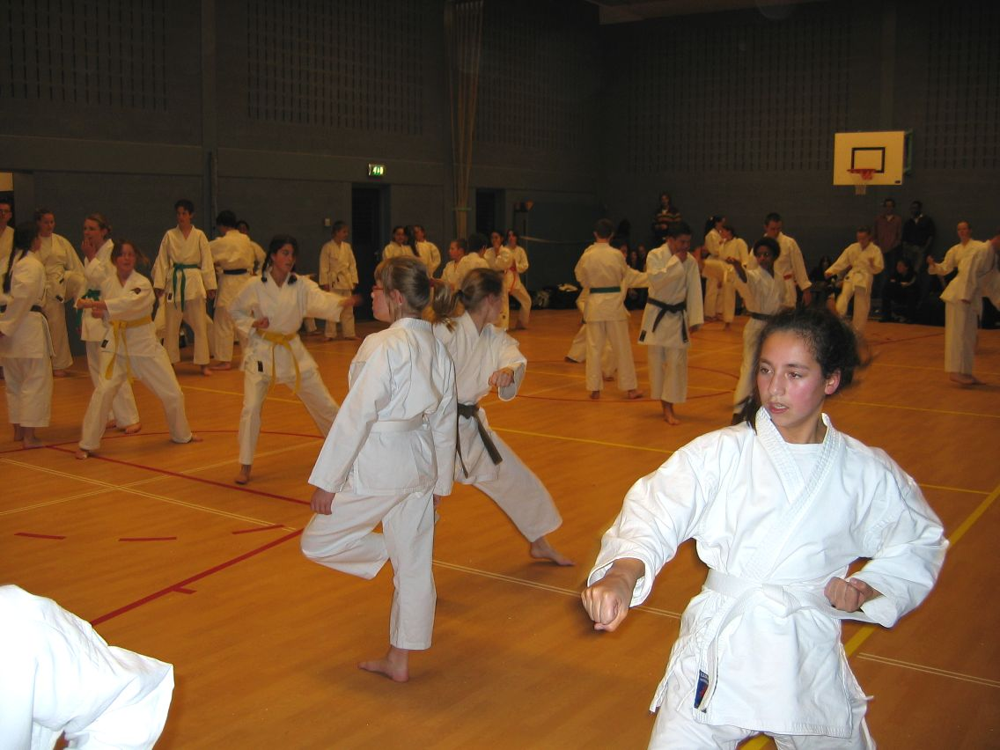
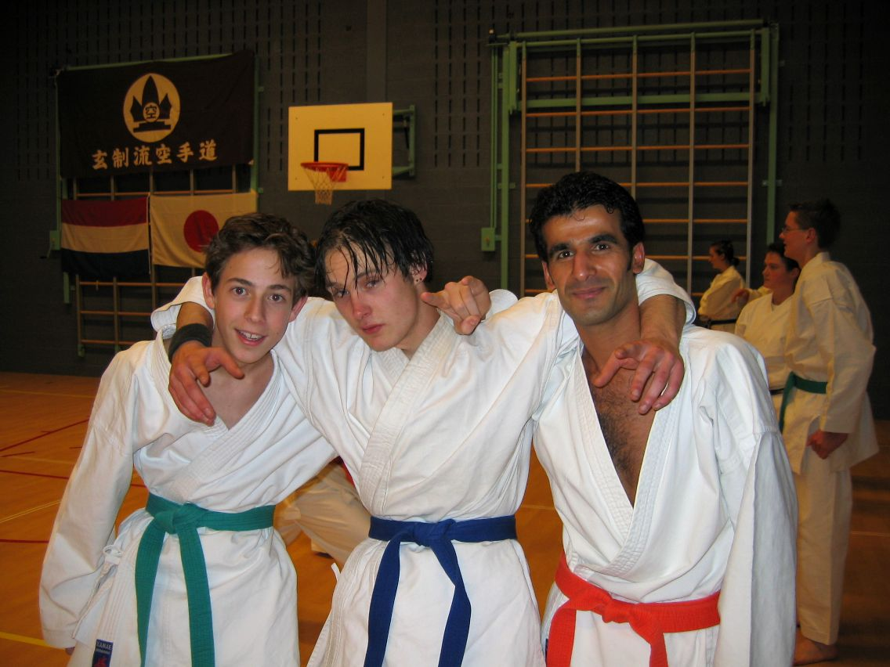
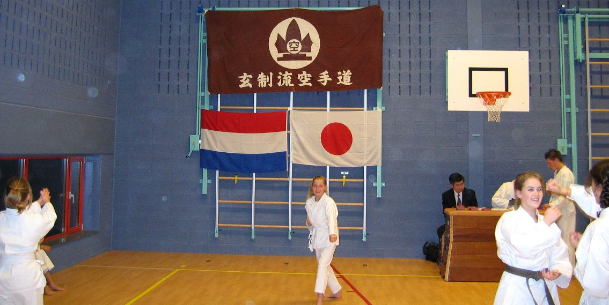
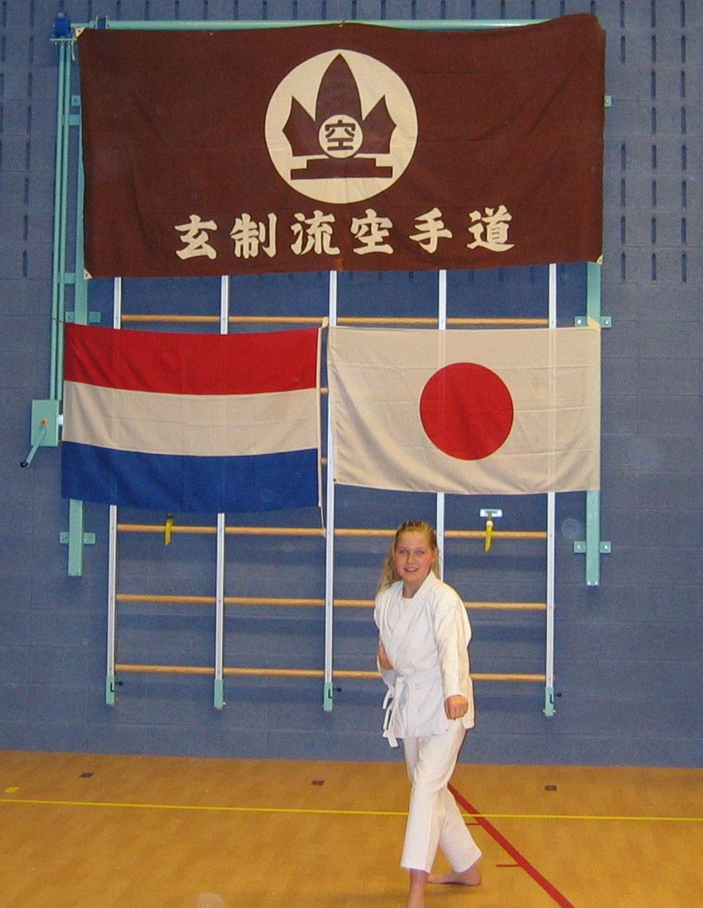
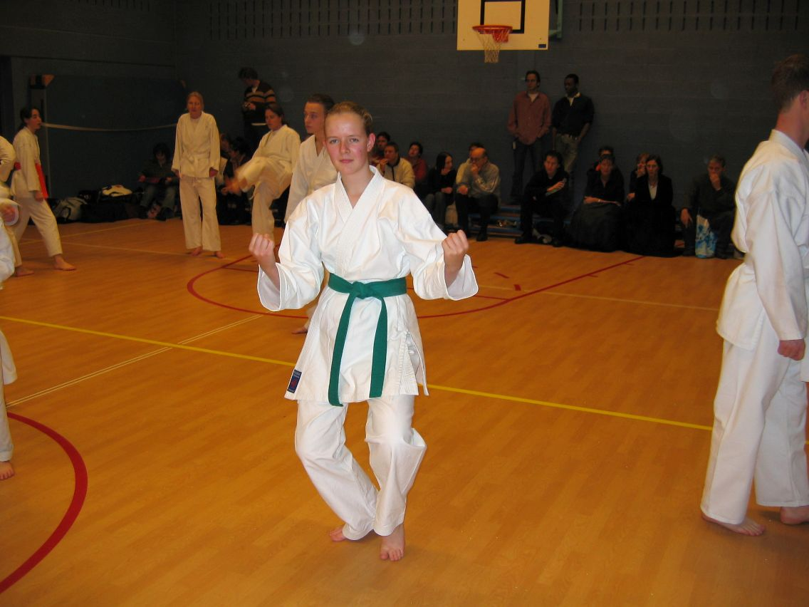
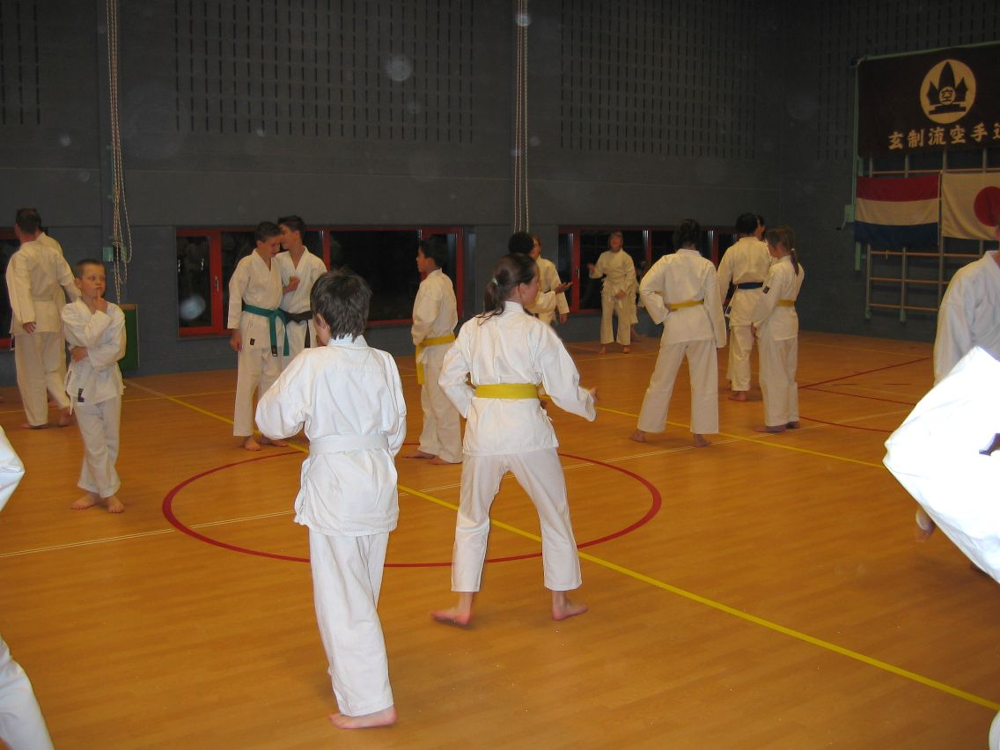
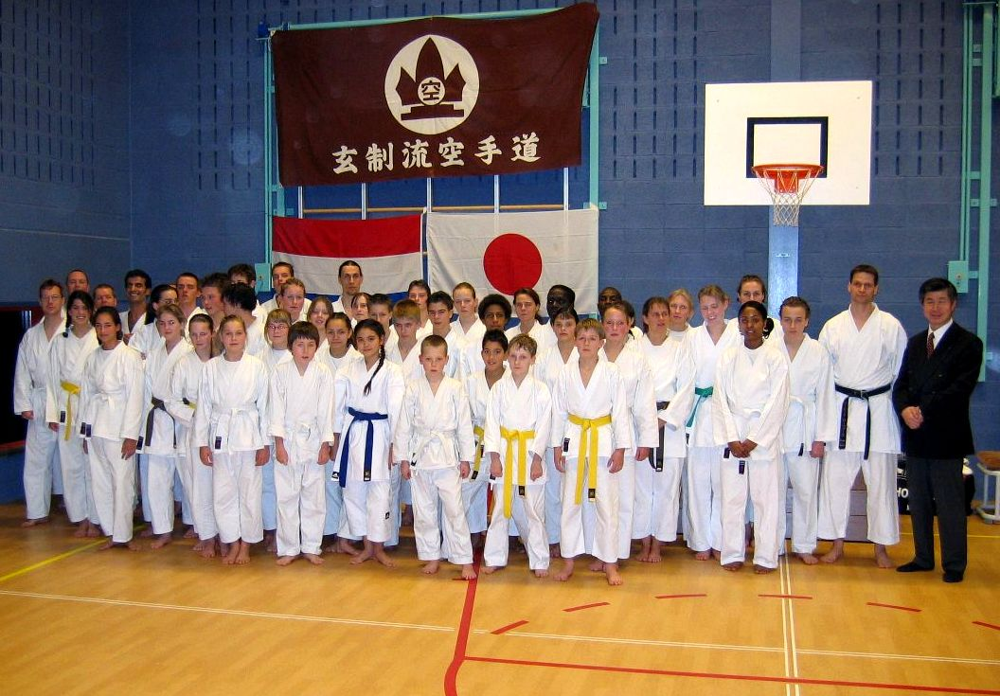
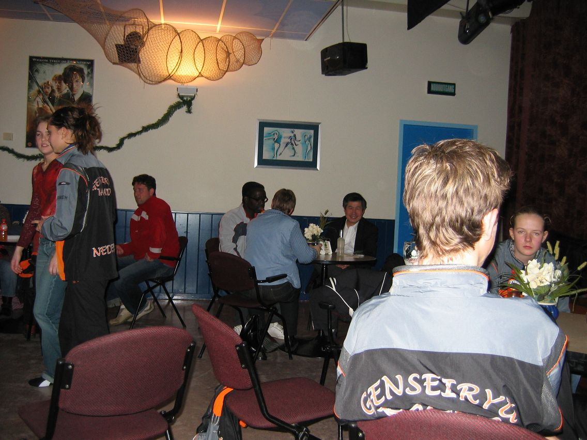
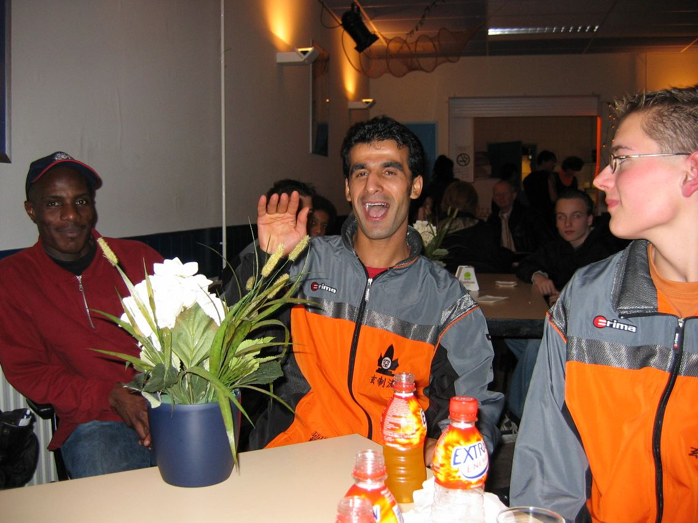
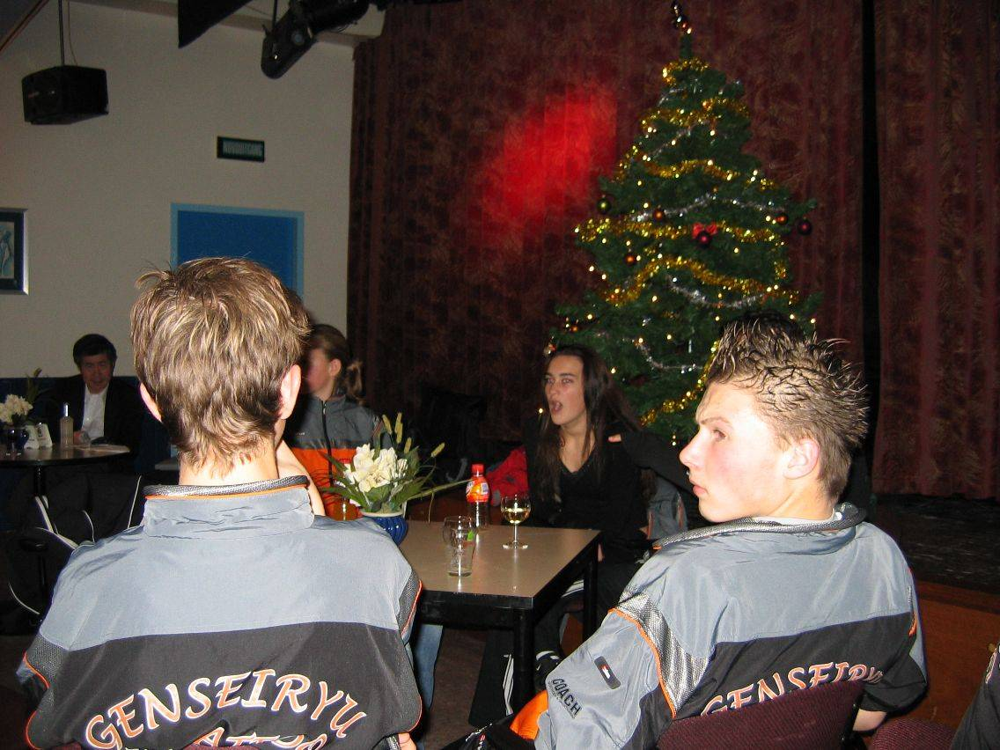
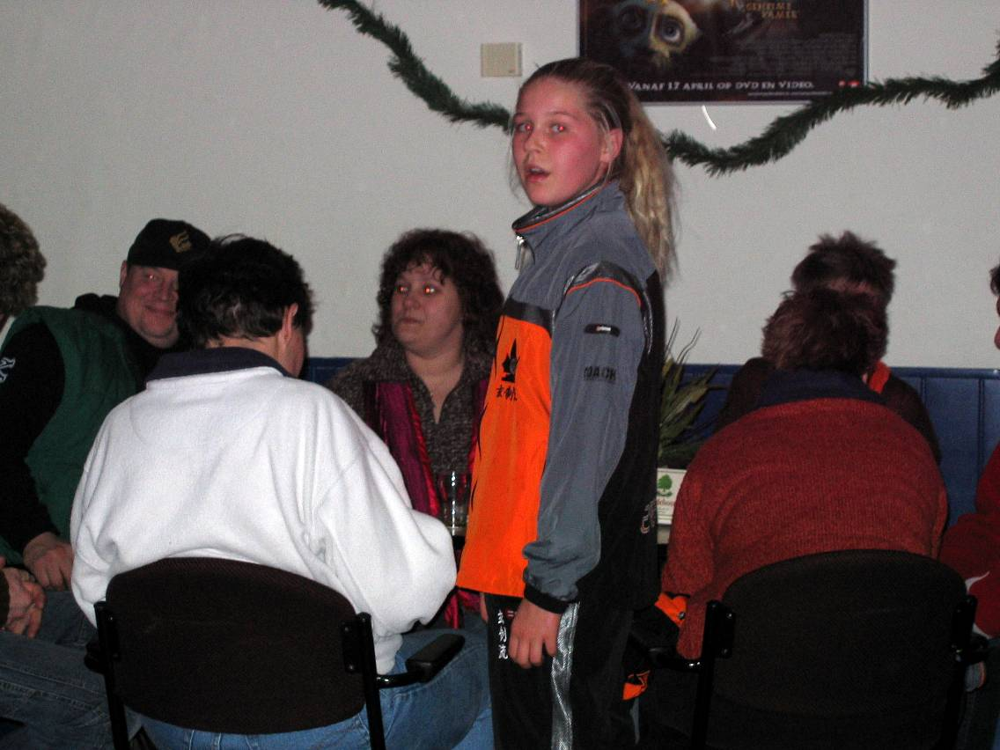
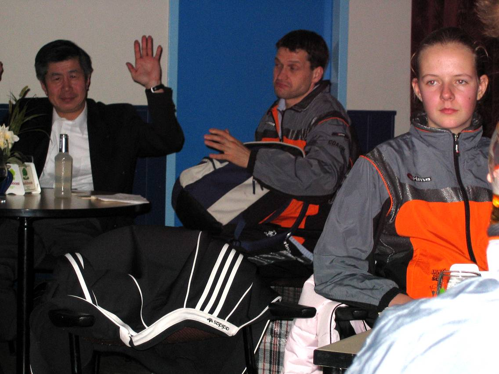
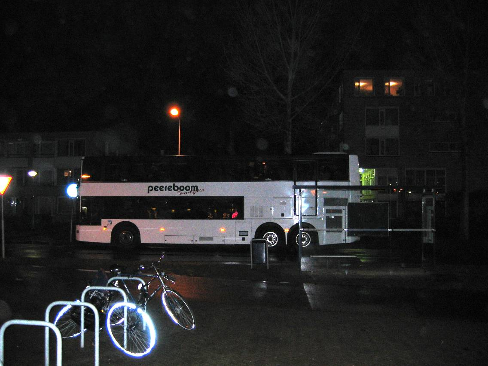
|
Kata: Loraine: 1e plaats Bert: 2e plaats Sharon: 2e plaats Jeroen: 2e plaats Mike: 2e plaats Melanie: 3e plaats |
Kumite: Ciska: 1e plaats Milou : 1e plaats Pluk: 1e plaats Ryan: 1e plaats Maurice: 1e plaats Mike: 1e plaats Richard: 2e plaats |